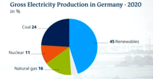
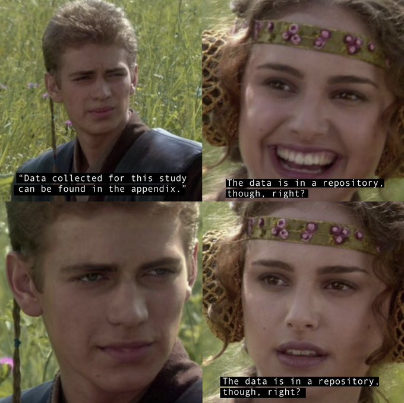

Week 23
Politico: despite the higher-than-expected inflation numbers, bond investors shrugged at the news, with long-term interest rates on U.S. government debt declining on the day.
A nascent martini... :)
"I received a message that shook me like a nascent martini"
Couldnt they just fake a good earnings report with people power?
"GameStop stock plummets 27 percent following earnings report. The stock was among the first to get a huge Reddit and social media following earlier this year"
I am looking forward to Kenobi
Interesting tech.. so, no more green screens?
The Guardian: "Half of clothes sold by online fashion brands ‘made from virgin plastic’"
Thats bcz they used the kung-fu vaccine
"Chile capital enters lockdown – despite mass vaccination"
BBC: "China has created a dystopian hellscape in Xinjiang, Amnesty report says"
Ok.. this makes more sense.. leaving.. to come back in, as part of a broader effort.
WSJ: "France Ends Africa Military Operation to Join Broader Alliance"
WSJ: "Covid-19 Deaths This Year Have Already Eclipsed 2020's Toll"
WSJ: "Germany Shuts Door on Patent Trolls.. The nation removed a legislative quirk that had made it a prime destination for globally active patent litigators who increasingly target fast-growing tech companies"
Members can run the Conflict Stats report for any region, anytime they want
Adamentium vs vibranium.. now thats an interesting question..
"@alastair_hick
Breakthrough research in nitrogen reduction to ammonia at high efficiency and rates from @DRMacFarlane"
"@pauldauenhauer
Opinion: The phrase 'in order to' can always be shorted to 'to' and it will be more concise and equally effective"
Do not use region codes for filtering anymore, using target lat/lon coordinates.
Conflict stats update, past 5 days, around Iraq and Syria. As before click on Output for the map.
"Meme stock favourite GameStop says it is subject of SEC probe"
Damn.. that serious?
Der Spiegel: "[Green Party Leader] Annalena Baerbock has spruced up her résumé, a comparatively minor sin. Her election chances are ruined, however"
CNBC: "Wind turbine giant Siemens Gamesa lays out plan to drive down cost of 'green' hydrogen"
The Guardian: "Leaders at the G7 summit will call for a new, transparent investigation by the World Health Organization into the origins of the coronavirus, according to a leaked draft communique for the meeting.The call was initiated by Joe Biden’s administration and follows the US president’s decision to expand the American investigation into the origins of the pandemic, with one intelligence agency leaning towards the theory that it escaped from a Wuhan laboratory"
"China Returns to Its Strict Covid Restrictions to Fight a New Outbreak. Foreign businesses worry that tough quarantines and restrictions could persist into next year as Beijing struggles with variants and questions about its vaccines"
On EU-UK tussle, the "sausage-war".
Good summary from Chuck Norris.
"Canadian pipeline company TC Energy is formally ending its bid to build the Keystone XL pipeline project"
"House Democrats about to uncork 5-pronged assault on tech.. Bills set to be announced in the coming days would make it easier to break up giant tech companies, block them from merging and prohibit them from hobbling their rivals"
"Whitepaper from @SiemensGamesa sets out roadmap to drive down cost of green #hydrogen"
"@airproducts Announces $1.3 Billion #NetZero #Hydrogen Energy Complex in Edmonton, Alberta, #Canada"
"@TPGroupUK Powers the UK’s First Full-Scale #Hydrogen Train"
"US buying 500 mn doses of Pfizer Covid vaccine for world"
"@levfacher
New: There are about 7,000 state legislators in the United States, and about 1/3 of them used pharmaceutical industry money to fund their campaigns last year"
But if "both sides of the aisle" are lukewarm abt China, independently, then the consensus will reflect that lukewarmess abt China. Nothing weird about that.
If bipartisanship is naturally occuring, fine.. no need to harp about it. The problem, the thing to be avoided is when one-side is constantly "urged" to be bipartisan, to go towards some mythical consensus, preemptively.
"We're trying to create nonviolent 'co-resistance' so Israelis & Palestinians can live together peacefully. That can only happen in a future, where 18 yr old (Israeli soldiers) don't control another people by force." @SanamF24 speaks w/ex @IDF sniper @AGvaryahu on @MEastMatters pic.twitter.com/4Pv0R9xINd
— Middle East Matters – France 24 (@MEastMatters) June 8, 2021
"@vtg2
CFTC Commissioner Berkovitz warned that derivatives trading on blockchain-based “DeFi” platforms was likely happening illegally & that policymakers needed to halt the development of what could become an 'unregulated shadow financial market'"
"@CSIRO and Ampol Launch Endua to Build Next Gen of Clean Energy Storage.. New startup will solve some of the hardest problems in the transition to #renewablenergy"
45% from renewables ain't so bad

"Lithuania: Plans Are Underway to Prepare National #Hydrogen Development Guidelines"
"Hoegh LNG Acquires Minority Stake in GEN2 Energy and Signs Cooperation Agreement on Seaborne Logistics for Green Hydrogen. Targets to take a first-mover position in seaborne transport of green #hydrogen"
Goofiest meme Ive ever seen

Nice.. cam shows wind part, then H2 fuel station, it's like green energy comes from up thereeee... goes into my car down hereeee. Boom. Boom.
"@JontheHunt
Refuelling with #hydrogen from wind & water @ITMPowerPlc Gen 1 & Gen 2 #toyota #mirai. Glorious weather for a road trip"
"The Group of Seven (G7) has agreed to step up efforts to advance commercial scale hydrogen from low carbon and renewable sources across its economies, including support for fuel cell deployment globally"
Bicycle without a chain. Great.
"Aiming for a practical 99% efficient drive train is the goal of Project"
Apparently this Blanco guy is canned as part of FinCEN shake-up.
"In a White House ... Press Call a Biden administration official admitted that the CIA and other parts of the U.S. intelligence apparatus were involved in assisting the “War on Corruption” which jailed former president Luiz Inacio Lula da Silva and elected Jair Bolsonaro"
"An atmospheric research station in Hawaii recorded its highest concentrations of carbon dioxide since accurate measurements began 63 years ago"
Boh-ring
"Peru's right-wing presidential candidate Keiko Fujimori raises allegations of 'irregularities' and 'signs of fraud' in Sunday's election as her rival, far-left trade unionist Pedro Castillo, takes a razor-thin lead"
"@adventnrg Technologies Signs New Contract with U.S. DOD for Wearable Fuel Cell"
Oz "H2 under $2" vs US "80% Cheaper by 2020 to 1 dollars/kg". The race is on
"Secretary Granholm Launches Energy Earthshot Initiative to Make Clean Hydrogen 80% Cheaper by 2020 to $1 per Kilogram"
US DOE: "We're announcing the first-ever Energy Earthshot Initiative to reduce the cost of clean hydrogen by 80% within the next decade"
Some in EU want to do away with their version of filibuster
"Germany's foreign minister Heiko Maas said Monday that the right for individual EU member states to veto decisions must be scrapped, arguing that the 27-member bloc cannot be hamstrung by single hold-outs"
"This week several agreements regarding hydrogen in the transportation and industrial sectors have been inked. Europe has remained active in the hydrogen market as usual. However, the St. Petersburg International Economic Forum (Spief) in Russia has remained a driving force behind several major deals"
Check out our article on enabling large-scale offshore wind with underground #hydrogen storage in the June edition of @EAGE_Global First Break (p. 59). https://t.co/abUTXAPtMF@HyStorPor @GeosciencesEd @jmouli_castillo @EdlmannKatriona @EdinGeoenergy pic.twitter.com/6dY57zmIio
— Jonny Scafidi (@jonafushi) June 7, 2021
"Austrian supermarket orders 70 hydrogen fuel cell trucks from Hyzon"
"In a White House ... Press Call a Biden administration official admitted that the CIA and other parts of the U.S. intelligence apparatus were involved in assisting the 'War on Corruption' which jailed former president Luiz Inacio Lula da Silva and elected Jair Bolsonaro...
In July 2017 .. Kenneth A. Blanco gave a speech at NATO think tank the Atlantic Council in which he bragged of FBI personnel informally involved in Brazilian anti-corruption operation Lava Jato and its prosecution of former president Lula. FBI personnel involved later boasted that it had 'toppled presidents'. Lava Jato prosecutor Deltan Dellagnol described Lula’s 2018 arrest which kept him out of the election he was on course to win, as “a gift from the CIA“. The judge who prosecuted Lula, Sergio Moro, became Bolsonaro’s Justice Minister, and both made an unprecedented visit to CIA headquarters in Langley within months of taking office. Lava Jato’s origins can be traced back to 2008/09, where Moro and a blueprint for an operation of its type appear in State Department cables"
"The generator built by IIT [Delhi] utilises hydrogen in internal combustion engines 'for zero emission with higher thermal efficiency'. A dedicated lubricating oil for the engine was also developed by the IOCL"
There r some good tubers nothing against them.
Of course he did... Mayweather is an expert boxer.. Even retired, nearly 20 yrs older, with Paul being in a higher weight class, MW did better.
Tuber thinks he'll just get out there, "do some shit", "get likes" and win 🤨?
"Floyd Mayweather Dominates Youtuber Logan Paul"
Haunted houses are just malfunctioning smart houses
— MaxTheSilva 🔥 (@MaxTheSilva96) June 6, 2021
Everything is a provocation for CH
"The US is helping Taiwan battle Covid-19. To China, that's a provocation"
Texas es Mexicano!!
Si se puede
"López Obrador's Coalition Wins a Majority in Mexico's Lower House"
Chaos Walking was ok
"Peru's Election Too Close to Call as Pedro Castillo Takes Lead.. The leftist candidate has 50.2% support, pollster Ipsos said, versus 49.8% for his right-wing opponent Keiko Fujimori"
That's Trump territory... Aren't there new approaches in ISR? Boh-ring
"Netanyahu slams coalition pact as 'greatest election fraud'"
'US security guarantee helped countries develop' says MB.. And you know he has that statement backed by stat analysis.
One cld argue either sanction fully or not at all. Fully meaning forcing all outbound shipments, flights to go through certain hops, inspecting them.
Did sanctions push them into the drug trade or the reason was economic mismanagement? More of the latter wld be my guess.
Plus notice how batteries are not even part of the discussion. That's because it is inferior tech.
"Fuel repurposed from waste or organic sources"? You could say the same for kerosene "repurposed from organic, dead dinaseurs". Or does net-zero mean producer of the fuel just plants bunch of trees balancing "bad" pollution with "good" trees?
You are barking up the wrong tree.
"Several startups are racing to get supersonic planes flying again... United and Boom also want to make these flights environmentally friendly, promising that these flights will be 'net-zero carbon from day one,' and rely completely on sustainable aviation fuel, which is repurposed from waste or organic sources"
Looks like Fox News is trying to plug an anchor..? Are the ratings down for the guy? What's his name.. Sean Finnigan. Shamrock? McCohohonehehey
Scholze is a rising star, hell already a star, in mathematics. Good to hear confirmation on tools like Lean from him. Computer-aid in any field is a good thing.
Peter Scholze: "I find it absolutely insane [in a good way] that interactive proof assistants are now at the level that within a very reasonable time span they can formally verify difficult original research"
Politico: "The SEC has removed William Duhnke as chair of the Public Company Accounting Oversight Board, in a victory for Sens. Elizabeth Warren and Bernie Sanders, days after they called for the audit watchdog's leadership to be fired"
???? blocking the Polish border?
"Belarusians protested on Saturday at the Polish frontier, calling for President Alexander Lukashenko to lift a border closure"
Liked by many but for set of problems I deal w quaternions seem like overkill.
The downtrend on the real unemployment continued. The defunct unemployment number did its little fluctuation, threw ppl off, and they were shitting bricks for a month. If they followed better stats they would be not be shitting a William Shatner, it would just be a little Leonarda Di Caprio.
UNRATE U6RATE REAL_UNRATE REAL_UNEMP_LEVEL
2021-03-01 6.0 10.7 12.128327 19473.0
2021-04-01 6.1 10.4 11.852126 19080.5
2021-05-01 5.8 10.2 11.527325 18551.5
"The [Australian] government’s ‘H2 under $2’ goal could be achieved sooner"
"Citroen Unveils the 400-km Hydrogen FuelCell Powered.. Van. With More than 400 km's of autonomy and hydrogen refueling in less than 3 minutes, Citroën ë-Jumpy Hydrogen foreshadows electric utility of tomorrow"
I'm old enough to remember when the idea of a global minimum tax was deemed utopian
— Gabriel Zucman (@gabriel_zucman) June 4, 2021
So despite the low rate (probably 15%), couldn't be more excited to see this
It's a start—nothing prevents coalitions of countries to soon choose higher rateshttps://t.co/W1UEG3a4Uq https://t.co/yBjPwW0ZYG
Strange.. it's all very strange..
"California governor slams judge as assault rifles ban overturned"
@KGforNYC sounds competent, but not too prog. Would not be my first choice. Interesting life history though..
Adams, isn't that the guy saying he'll be packing if elected mayor? And a Democrat..?
Burn
"@KGforNYC
During COVID I delivered a million meals a day, while Eric Adams wrote a cookbook"
Did a little autocrat trolling to look good w Putin before that meeting look where it got you
DW: "EU bans Belarus carriers from its airspace"